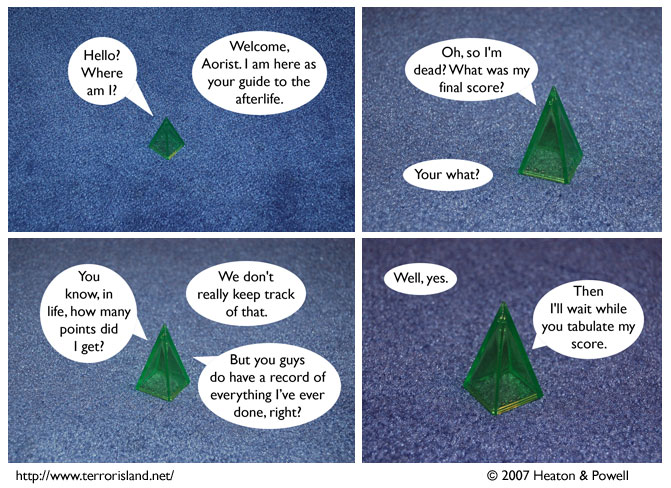

Strip #176
— Friday, July 26, 2007
If Aorist scores high enough, he may get to enter his initials.
Notes, Thoughts, &c.
Ben’s Notes
So, the Comic-Con is going well, but very few fans have come to us to ask for sketches. I think maybe they’re having trouble recognizing us in the crowd. In case my description of myself last time was inadequate, here’s some more information: I usually wear glasses, and my hair is brown.
Lewis’s Notes
Today, Ben and I attempted to create a podcast. These comments would be in audio format, but Ben and I are terrifically bad at podcasting, and have decided to take our first attempt at it with us to our graves. Perhaps at some point in the future, we will have improved to the point where our podcast is not painful to experience. When that comes about, you can expect to get moderate enjoyment from listening to our lighthearted banter.